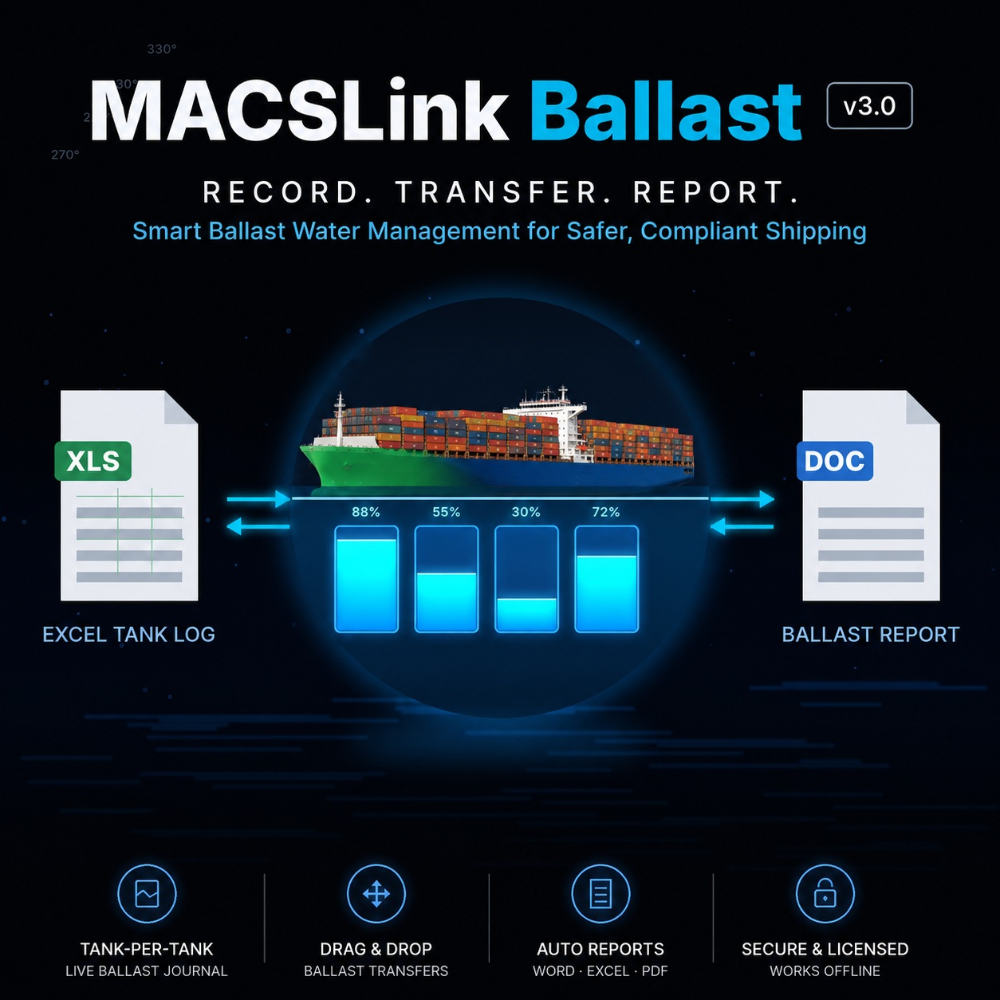

MacsLink
Apps for deck officers · made at sea
Ballast Management replaces hand-typed log rows with a live picture of the vessel. Every operation you record updates the tank's level, its own sheet in the Tank per tank log, and the reports you hand to port state.

Drag from the sea onto a tank. Records IN, ACC IN or EXC IN with density, temperature, salinity and origin of water.
Drag a tank out to sea. Records OUT, ACC OUT, EXC OUT or discharge to a reception facility (FAC).
Drag one tank onto another. Both sheets get a linked entry with From / To filled in — one action, two log lines.
Read the tank list straight from your loading computer's .stb / .tkp files or a tank-plan PDF, or import an existing tank log to pick up where you left off — capacities included.
Load a screenshot of the stability software's longitudinal section and MacsLink detects the tank boxes and matches them to tank names. Fine-tune anything in the layout editor; without a picture, an automatic grid is used.
Every tank shows its current volume and percentage on a colour scale, with ballast and side tanks, port and starboard, laid out as on board. Totals for the whole vessel update as you go.
The operation form previews before/after levels, offers ½ and Max quantities, and blocks overfills, negative levels and missing at-sea data. Salinity is calculated from density and temperature (UNESCO EOS-80).
Exports to the "Tank per tank log" workbook — one sheet per tank, dates and times in the right format, rows extended automatically past the template's 30. New entries are highlighted in the built-in log preview until exported.
Load the port's or company's ballast reporting form (Word, Excel or fillable PDF) once. MacsLink maps the columns and fills in vessel data, uptake, exchange and discharge details for every tank in use.
Port-by-port ballast report generation — the specific form each port requires, built in and ready to use — is coming next. In progress
Every operation can be undone and redone until you export, so a wrong drag or a typo never ends up in the official log.
Each vessel keeps its own tanks, layout, picture and log, saved automatically. Switch ships in two clicks from the menu — handy for officers rotating between sister vessels.
Runs entirely on the ship's PC. No internet connection needed, and no ballast or position data ever leaves the vessel.